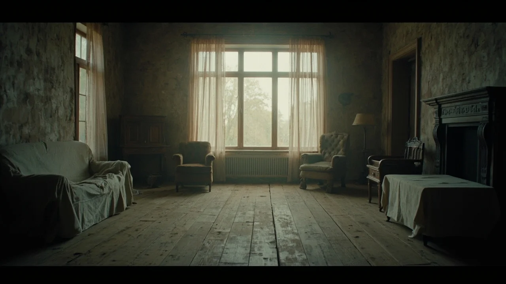
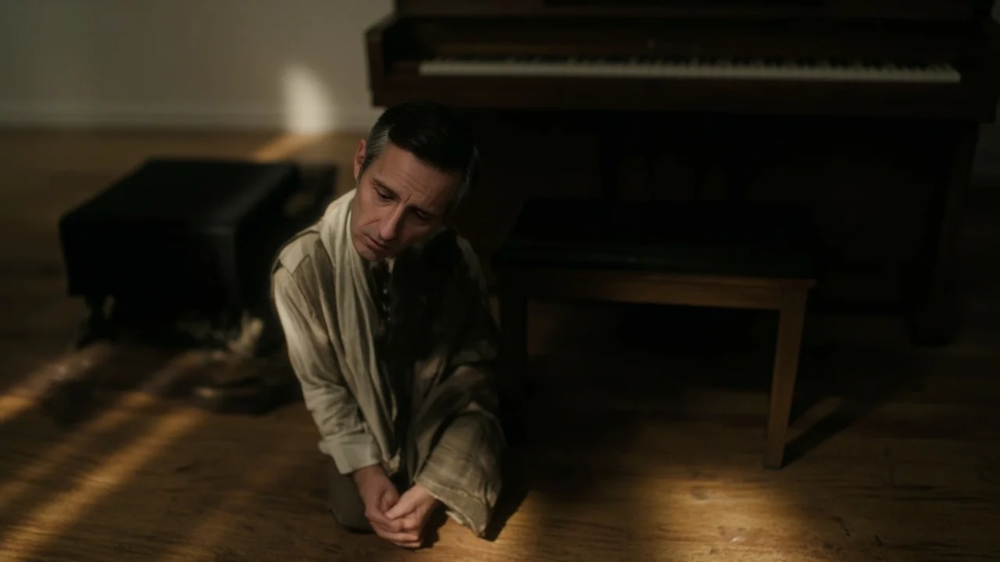
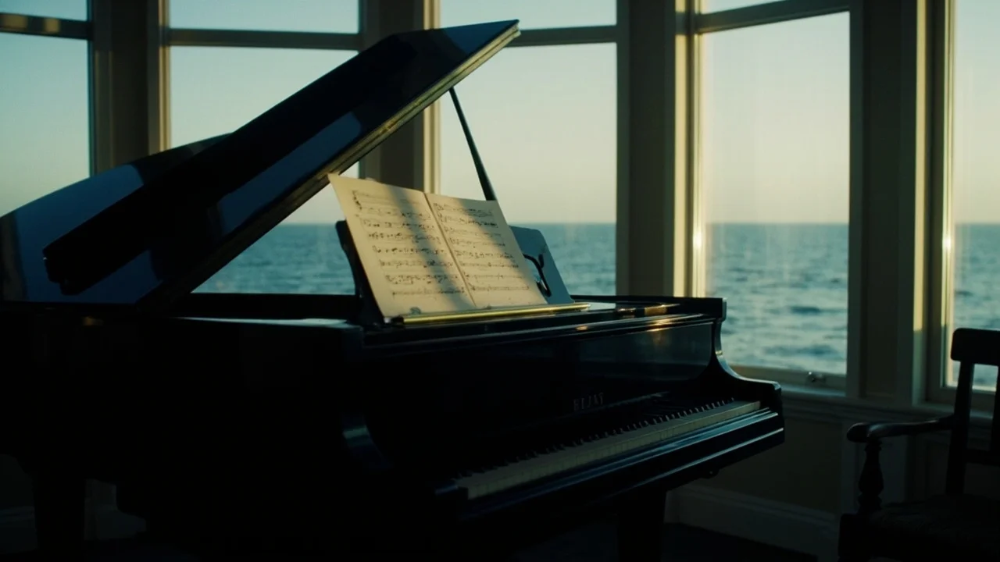
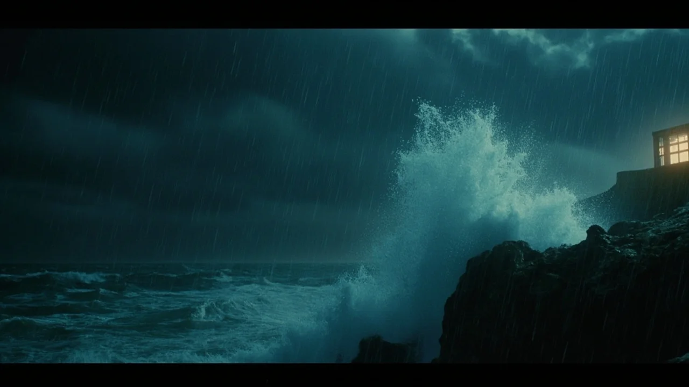
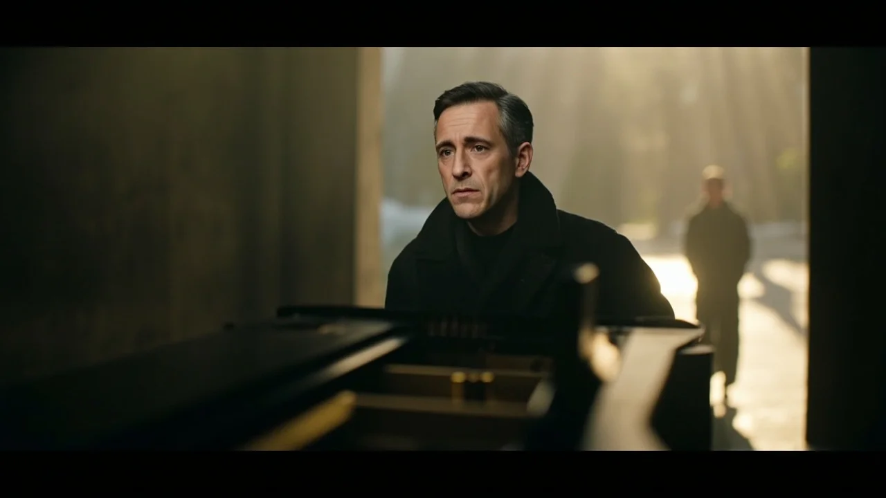

El eco de los pasos de Miguel resonaba en el salón desmantelado como en una capilla abandonada. Las sábanas blancas cubrían el aparador de roble y las dos butacas de orejas, convirtiendo los muebles familiares en un conjunto de bultos espectrales. Su madre había fallecido a finales del invierno y, tras tres meses de trámites notariales y visitas de tasadores, a la casa familiar solo le quedaba el rumor sordo del viento de la meseta contra los postigos. En el centro de la estancia, ajeno al embalaje general, permanecía el piano vertical de nogal que su abuelo había comprado en Madrid a comienzos del siglo pasado.
Miguel pasó la palma de la mano sobre la madera barnizada. Aquel instrumento había sido el territorio común donde Clara y él aprendieron a descifrar el mundo. Ella había llegado a la casa con doce años, menuda y silenciosa tras el accidente que la dejó sin padres, y su madre la acogió como a una hija. Con el paso de los inviernos, las escalas compartidas a cuatro manos se transformaron en un entendimiento que prescindía de las palabras. Miguel recordaba la tarde exacta en que la complicidad fraterna se quebró para dar paso a una devoción distinta: el roce involuntario de sus antebrazos sobre el teclado, la pausa repentina en el compás y la mirada asustada de Clara al comprender que ambos sentían lo mismo.
Antes de que los transportistas llegaran para cargar el piano, Miguel decidió retirar la tabla frontal del clavijero para asegurarse de que los macillos estuvieran bloqueados con las cuñas de transporte. Desatornilló los dos pestillos laterales de latón, levantó la pieza pesada y la apoyó en el suelo. El interior desprendió un olor denso a fieltro viejo, polvo acumulado y madera curada.
Al asomarse a la caja de resonancia con la linterna pequeña del llavero, un bulto blanco llamó su atención entre las varillas de los apagadores de los bajos. Estaba encajado detrás del puente metálico, protegido del juego de las teclas. Miguel introdujo los dedos con cuidado y extrajo un sobre doblado en dos. El papel, amarilleado por los bordes y seco como una hoja de otoño, llevaba escrito su nombre en tinta azul sepia: «Para Miguel».
La caligrafía recta y angulosa de Clara no había cambiado en su memoria.
Miguel sintió una punzada seca en el estómago. Se sentó en la banqueta giratoria, con las manos temblorosas, y desdobló el pliego. La carta estaba fechada el doce de octubre de mil novecientos noventa y siete.
«Miguel: He bajado al salón de madrugada, mientras dormías en el sillón del hospital velando a tu madre. Me voy en el tren de las seis. Sé que me pediste paciencia en tu nota, pero ayer por la tarde fui a la clínica para contarte algo que no podía esperar: estoy embarazada de dos meses. Iba dispuesta a quedarme a tu lado pasara lo que pasara, pero cuando llegué a la puerta de la habitación te escuché prometerle a tu madre, entre lágrimas, que jamás la dejarías sola y que tu vida entera le pertenecía. En ese instante lo entendí con una claridad espantosa. Si te decía que esperaba un hijo nuestro, te obligaría a elegir entre tu madre convaleciente y nosotros. Te quedarías por culpa o te marcharías arrastrando un rencor que terminaría envenenando todo lo que sentimos. No quiero un amor sostenido sobre el sacrificio de otra vida. Me voy al norte, a casa de una compañera del conservatorio. No me busques. Aprenderé a ser fuerte por los dos».
Una segunda cuartilla, escrita con un trazo tembloroso y borroso en algunas palabras, completaba la carta:

«Nunca llegué a ver a mi compañera. En la pensión de Burgos empecé a sangrar y los médicos no pudieron hacer nada. He perdido al niño, Miguel. Y contigo he perdido la única patria que conocía. Guardo esto aquí, en el piano donde fuimos felices, porque es el único lugar donde todavía puedo hablarte sin romperme».
Miguel apretó la carta contra su pecho mientras un sollozo ahogado le rompía la garganta. Cayó de rodillas sobre la tarima vacía, rodeado por el silencio de una casa donde había permanecido veinte años cuidando a una anciana enferma, sin saber que al otro lado de su obediencia yacía la ceniza de una familia que jamás llegó a nacer.
La búsqueda le llevó seis semanas de desvelos y llamadas intermitentes a secretarías de conservatorios, colegios diocesanos y afinadores de pianos de toda la cornisa cantábrica. Siguió rastros débiles, contratos antiguos de sustitución en escuelas municipales y nombres que se desvanecían al llegar a los archivos de provincias vecinas, hasta que un organista de Avilés recordó a una profesora que daba clases particulares de piano en una villa marinera al borde de los acantilados.
—Vive en la cuesta del faro —le dijo el músico con una pausa cautelosa al teléfono—. Pero si va a verla, hágalo pronto. Clara lleva meses sin salir a la calle. El médico de la villa sube dos veces por semana; el corazón apenas le responde.
Miguel no esperó a la mañana siguiente. Condujo durante toda la noche bajo un temporal de agua y viento que azotaba la autovía del norte, cruzando las montañas en sombras hasta que la claridad plomiza del amanecer recortó los tejados de pizarra y el puerto encajonado entre las rocas.
La casa de Clara era una edificación estrecha de dos plantas, con la fachada encalada y las galerías de madera pintadas de azul ultramar, orientadas hacia la bocana de la ría. El aire traía un olor penetrante a salitre, brezo mojado y algas en bajamar.
Miguel subió los tres peldaños de granito de la entrada y llamó con los nudillos a la puerta acristalada. Pasaron varios minutos de silencio tenso en los que solo se escuchó el graznido de las gaviotas sobre los acantilados. Cuando la puerta se abrió por fin, una ráfaga de calor doméstico y aroma a infusión de tila precedió a la figura que apareció en el umbral.

Clara se sujetaba al marco con una mano delgada, cubierta por una rebeca de lana gris perla. A sus cuarenta y tres años, la enfermedad había afinado sus pómulos y palidecido su piel, pero sus ojos avellana conservaban la misma chispa limpia que Miguel recordaba de las tardes de infancia. Llevaba el pelo castaño recogido en una trenza suave sobre el hombro, con hebras plateadas que brillaban con la luz del mirador.
Clara lo miró sin retroceder ni mostrar sobresalto, como si su llegada formara parte de una partitura que llevaba décadas esperando su compás final.
—Has tardado mucho, Miguel —dijo con una voz suave que no guardaba reproche alguno.
—La carta estaba dentro del piano, Clara —consiguió responder él, con la voz rota—. La encontré hace un mes, cuando vacié la casa.
Clara asintió despacio y se apartó del paso, apoyándose con cuidado en un bastón de madera clara.
—Pasa. El viento de este mar no perdona a los que se quedan en la puerta.
El salón era espacioso y luminoso, dominado por una cristalera amplia que daba directamente al cantil y a la línea espumosa donde rompían las olas. En el rincón más abrigado de la estancia reposaba un piano de cola media de laca negra, con la tapa levantada y varias partituras manuscritas sobre el atril.

Clara se sentó despacio en una butaca baja junto a la ventana, cubriéndose las piernas con una manta escocesa. Señaló la silla frente a ella y esperó a que Miguel se acomodara antes de hablar.
—Durante muchos años creí que habías encontrado la carta al día siguiente de marcharme —dijo ella, mirando hacia el horizonte gris—. Pensé que habías leído lo del hospital y lo del niño, y que aun así habías decidido que tu sitio estaba junto a Elena. Llegué a odiarte por eso, Miguel. Me pasé diez años tocando con una rabia que me destrozaba los tendones, convenciéndome de que todo lo que habíamos vivido no había sido más que una trampa de la costumbre.
Miguel sacó del bolsillo interior de su chaqueta el sobre desgastado y lo colocó sobre la mesa baja, junto a la taza de infusión.
—Mi madre nunca volvió a ser la misma después del infarto —explicó él, mirando fijamente la madera—. Perdió el habla durante dos años y apenas podía caminar. Yo me convertí en su enfermero, en su sombra. Dejé las composiciones, acepté las clases en la escuela comarcal y me convencí de que tú te habías marchado porque aspirabas a una vida mejor en Madrid. Cuando mi madre murió en enero, sentí que mi existencia se había quedado vacía sin remedio. Pero al encontrar esta carta comprendí que el vacío no lo dejó su muerte, sino mi propia cobardía. Te dejé marchar sin pelear, Clara. Te fallé cuando más me necesitabas.
Clara estiró el brazo y posó sus dedos fríos sobre el dorso de la mano de Miguel. El contacto, después de veintitrés inviernos de distancia, devolvió de golpe una calidez que ninguno de los dos había vuelto a experimentar.
—Éramos dos muchachos asustados jugando a ser adultos, Miguel —dijo ella con una ternura infinita—. Yo también tuve miedo. Si me hubiera quedado a hablar contigo, si hubiera tenido el valor de entrar en aquella habitación de hospital y sostenerte la mirada, las cosas habrían sido distintas. Pero elegí el orgullo y la huida. Ambos pagamos un precio demasiado alto por no saber decir la verdad en voz alta.
—¿El niño? —preguntó Miguel con un hilo de voz, incapaz de contener las lágrimas que asomaban a sus ojos.
Clara sonrió con tristeza, acariciando la piel de su mano.

—Habría tenido tus manos para el teclado. Durante mucho tiempo le puse nombre y le imaginé un rostro en los días de lluvia. Pero ahora sé que descansa en paz, en el mismo lugar donde reposan todos los futuros que no supimos construir.
Miguel se quedó en la villa marinera. Alquiló una habitación modesta en una posada del puerto y cada mañana subía la cuesta empinada para cuidar de Clara. Durante dos semanas, el tiempo pareció detener su marcha en aquella casa sobre el mar.
Cocinaban juntos platos sencillos, ordenaban las partituras que Clara había escrito a lo largo de su vida docente y salían al mirador durante las tardes en que el viento amainaba. Miguel la sostenía del brazo mientras caminaban despacio por el sendero que bordeaba los acantilados, deteniéndose cada pocos pasos para que ella recuperara el aliento. No hablaban de la enfermedad ni de los años perdidos; conversaban sobre la armonía de las mareas, la luz plateada de la cornisa y los recuerdos luminosos de la infancia en la meseta, cuando el mundo entero cabía en los ochenta y ocho acordes de un piano de nogal.
Una noche de temporal recio, en la que las olas golpeaban con furia la base de las rocas y la lluvia repicaba sin tregua contra los cristales de la galería, Clara se sintió incapaz de levantarse del diván del salón. Su respiración era corta y superficial, y sus labios mostraban un matiz azulado que Miguel reconoció con una punzada de angustia.
—Siéntate al piano, Miguel —le pidió ella en un susurro, mirándolo desde la almohada—. Toca para mí.
—Estás muy débil, Clara. Debería llamar al doctor...
—El doctor no puede darme nada que no tenga ya en esta habitación —lo interrumpió ella con una sonrisa serena—. Toca la melodía de los dos. La que escribiste la noche antes de que todo se rompiera.

Miguel asintió sin replicar. Se acercó al instrumento de cola, levantó la tapa del teclado y apoyó las manos en las teclas de marfil. El silencio de la estancia se llenó con los primeros compases: una melodía lenta en tono menor, construida con arpegios suaves que recordaban el murmullo del agua y una cadencia melancólica que avanzaba hacia una resolución luminosa.
Clara cerró los ojos y respiró hondo, acompasando el pecho al ritmo de la música.
Miguel tocó durante más de una hora, repitiendo el tema con variaciones íntimas, dejando que las notas sostuvieran el peso de todo lo que nunca pudieron decirse. En mitad del adagio sintió un peso suave apoyarse contra su hombro derecho. Clara se había incorporado con un esfuerzo supremo y se había sentado a su lado en la banqueta, reclinando la cabeza sobre su brazo mientras sus dedos inertes reposaban sobre el teclado mudo.
Miguel no dejó de tocar. Siguió desgranando los acordes con la mano izquierda, sosteniendo a Clara con el costado, hasta que el temporal amainó afuera y la claridad gris del alba comenzó a teñir las aguas de la ría.
Cuando las últimas notas se extinguieron en la penumbra del salón, la respiración de Clara ya no rozaba su cuello. Se había marchado en silencio, con el rostro en calma y una expresión de paz absoluta que borraba todas las fatigas de su vida.
A comienzos de otoño, Miguel regresó definitivamente a la casa de la meseta. Había vendido la propiedad a una familia joven del pueblo, pero antes de entregar las llaves se encargó de cumplir una última promesa.
El piano vertical de nogal presidía de nuevo el salón vacío, completamente restaurado por un maestro luthier de Valladolid. Los macillos lucían fieltros nuevos de lana prensada, los bronces brillaban como espejos y las cuerdas vibraban con una afinación cristalina y perfecta.
Miguel abrió la tapa frontal del instrumento. En el fondo de la caja, fijado con un broche de madera para que el tiempo no pudiera extraviarlo jamás, depositó el sobre original de Clara junto a una cinta de seda azul ultramar recogida en su casa del norte.
Luego colocó sobre el atril una partitura manuscrita, encuadernada en tela negra y cosida a mano con hilo de lino. La tinta negra de los pentagramas aún conservaba el brillo fresco de los trabajos recientes. En la portada destacaba un título en caligrafía sobria: *La vida que no vivimos*.
En la primera página, justo encima del primer compás en clave de fa, Miguel escribió con mano firme la dedicatoria que guardaba para ella:
«A Clara Salgado: te encontré demasiado pronto para comprenderlo y demasiado tarde para remediarlo».
Miguel cerró despacio la tapa del teclado, se ajustó el abrigo y salió a la calle sin mirar atrás, dejando que la música durmiera para siempre en el corazón de la madera.